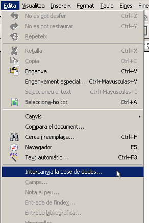
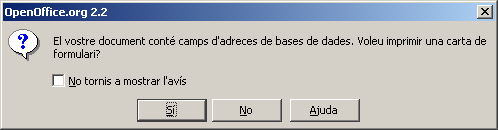

Enllaçar una base de dades amb lel LibreOffice Writer
En aquesta pràctica necessitareu enllaçar el LibreOffice Writer amb una taula que contingui dades (en concret, per a la pràctica proposada, dades referents a noms i adreces de l'alumnat).
El fitxer de pràctica no conté cap dada real (per no infringir la llei de protecció de dades), però un fitxer de característiques similars pot ser obtingut, de forma fàcil, a partir de les dades contingudes al SAGA.
El fitxer que emprareu a la pràctica és un full de càlcul i podeu obtenir-lo a adrecesalumnes.ods.
Naturalment, la base de dades (amb una sola taula o més) també podeu crear-la amb el LibreOffice Base o generar-la mitjançant la importació de dades d'un fitxer de qualsevol dels formats que LibreOffice reconeix.
Crear l'enllaç amb una taula existent
-
Pas 1: Executeu Edita | Intercanvia la base de dades …
.
-
Pas 2: Si, al quadre de diàleg que us apareix, ja hi surt la base de dades que voleu emprar, cliqueu el botó Tanca. En cas contrari, seleccioneu el botó Navega…, cerqueu el fitxer adrecesalumnes.ods i confirmeu-lo.
LibreOffice haurà generat de forma automàtica una base de dades amb una sola taula que contindrà la referència al full de càlcul original. Cal tenir present que, en cas de modificar l'esmentat fitxer adrecesalumnes.ods, els canvis no es veuen reflectits de forma automàtica i cal ”refrescar” les dades.
La nova base de dades és accessible des de tots els programes del LibreOffice capaços d'interactuar amb dades.
Trencar l'enllaç amb la base de dades
Si en un moment donat us interessa trencar el lligam entre el LibreOffice i la base de dades original, caldrà que accediu a Eines | Opcions | LibreOffice Base | Bases de dades i, després de seleccionar la base de dades que voleu “desvincular”, cliqueu el botó Suprimeix.

Combinació de correu
Realitzar una combinació de correu és enllaçar un document de text (part fixa de la combinació) amb una base de dades (part variable) per tal d'obtenir documents “personalitzats”.
Amb LibreOffice Writer això es pot aconseguir de dues formes: mitjançant un assistent, o bé de forma directa.
Combinar correu mitjançant l'assistent
-
Recupereu el document circularinformativasortidacultural.odt (de fet, valdria qualsevol document que vulgueu enviar de forma personalitzada a les famílies del vostre alumnat).
-
Feu Eines | Auxiliar de combinació de correu …
.
-
A l'assistent que s'obre, a l'esquerra hi teniu els passos a seguir i, a la dreta, les opcions de cadascun. En aquest primer cas, seleccioneu la primera opció: Usa el document actual. Cliqueu el botó Següent».

-
En aquest cas, disposeu de dues opcions: crear una carta o bé un missatge de correu electrònic. Seleccioneu la primera opció, Carta, i cliqueu el botó Següent».

-
El pas següent pregunta en referència a la presència o no d'un bloc d'adreça a la carta. En aquest cas, no cal. Per tant, desmarqueu la casella de selecció del segon punt Aquest document contindrà un bloc d'adreça en cas que estigui marcat.


-
El quart pas permet crear una línia de presentació a la carta, del tipus Benvolgut/da… Ho deixeu en blanc i salteu al pas següent:

-
Pas sisè, el LibreOffice Writer permet editar el document, cas que sigui necessari. Cal que així ho feu, per tal de posar els camps variables al document. Cliqueu el botó Edita el document….

-
Quan accediu a l'edició del document, us apareixerà a la pantalla un botó que permetrà donar per acabat el procés i el retorn a l'assistent.
-
Ara és moment de fer aparèixer els camps de la taula que volem combinar amb el document. Feu Insereix | Camps | Altres … (o bé premeu simultàniament Ctrl+F2). Us apareixerà el quadre de diàleg Camps.
-
Seleccioneu, en cas que no estigui seleccionada, la pestanya Base de dades, a Tipus Camps de combinació de correu i a Selecció de la base de dades adrecesalumnes | Full1.
-
Inseriu, al lloc adequat, els camps NOM i COGNOMS tot fent un doble clic als seus noms.
-
Tanqueu l'edició del document i retorneu a l'assistent.
-
En passar al pas següent el LibreOffice Writer genera un nou document que conté tantes còpies del document original com registres tingui la taula de la base de dades que s'ha triat a l'hora de combinar.
-
El setè pas permet editar un document individual per tal de fer-hi modificacions. Actueu igual que amb l'edició del document original.

-
L'últim pas permet quatre opcions:
-
Desar el document inicial (amb les definicions de la combinació).
-
Desar el document combinat (com un sol document, com a documents separats) amb possibilitat de limitar l'acció només a alguns registres.
-
Imprimir el document combinat (tot o només una part).
-
Enviar el document combinat com a missatge de correu electrònic.
-

Combinar correu de forma directa
Tot aquest procés de combinar un document de text amb una base de dades pot fer-se de forma directa, sense la intervenció de l'assistent.
-
Creeu el document que voleu combinar. Per accelerar-ne el procés, obriu el fitxer circularinformativasortidacultural.odt
-
Posicioneu-vos al punt on voleu inserir un camp de combinació i feu Insereix | Camps | Altres … (o bé premeu simultàniament Ctrl+F2). Us apareixerà el quadre de diàleg Camps.
-
Actueu de la mateixa manera que al bloc anterior pel que fa referència a la inserció dels camps de la taula dins del document.
-
Passeu a imprimir. En aquest moment, el LibreOffice Writer detecta que el vostre document conté camps d'una base de dades i us demanarà si voleu imprimir una carta de formulari.

-
Si a la pregunta heu respost que No, s'imprimirà la carta model.
-
En canvi, si heu respost que Sí, se us demanarà que concreteu quins registres s'han de prendre com a referència en fer la combinació.

-
Si voleu imprimir totes les cartes de combinació, assegureu-vos de tenir marcada la casella de selecció Impressora i confirmeu el botó D'acord.
-
Si voleu seleccionar només alguns registres, actueu sobre la icona i concreteu les condicions que han de satisfer les dades.

Etiquetes
Fent Fitxer | Nou | Etiquetes es posa en marxa un assistent que us facilitarà la definició d'etiquetes i acabarà generant un document de text del LibreOffice Writer.
-
Seleccioneu la pestanya Formata i introduïu-hi les característiques físiques de les etiquetes que voleu emprar. Una vegada fet, si les voleu desar feu-ho per tal d'accelerar l'ús en la propera ocasió.
-
A la pestanya Opcions, assegureu-vos de tenir marcada l'opció Tota la pàgina.
-
A la pestanya Etiquetes, cas de tenir definides i gravades les característiques físiques, les podríeu haver recuperat a la zona Formata.
-
A la pestanya Etiquetes, seleccioneu la Base de dades adrecesalumnes.
-
Seleccioneu, també, la taula Full1.
-
Aneu seleccionant els camps de la taula que necessiteu i aneu-los introduint al quadre Text de l'etiqueta. Si voleu escriure text fix (comes, espais…), feu-ho en aquest moment.
-
Quan hàgiu acabat, cliqueu el botó Document nou.

|
|

|
|